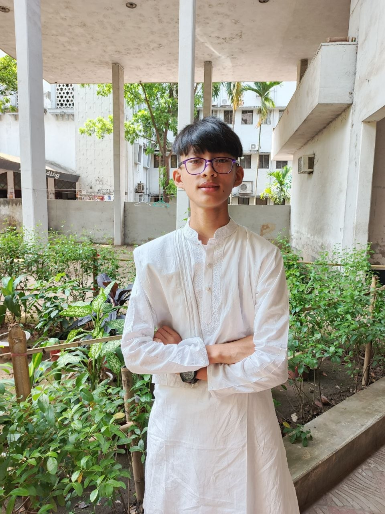
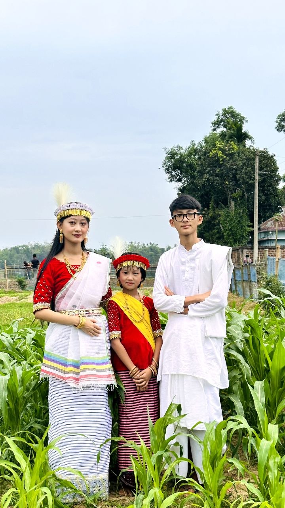

Manipuri Folk Artist & Musician
N. SHUVODEEP SINGHA
Pena Artist • Singer • Music Enthusiast
Rooted in Tradition,
Inspired by Music.

About Me
A Passion Rooted in Heritage
I am N. Shuvodeep Singha, a young Manipuri artist with a deep passion for music, traditional culture, and artistic expression. I am a Pena artist and singer who believes that traditional music is an important part of cultural identity.
Alongside practicing Pena, I am also learning Guitar, Flute, and other musical instruments. I want to explore different musical traditions, develop my artistic abilities, and contribute to preserving and sharing Manipuri cultural heritage with future generations.
Journey
My Musical Journey
Pena
Traditional Manipuri musical instrument and my primary artistic passion.
Singing
My journey of exploring vocals and musical expression through voice and emotion.
Guitar
An instrument I am learning to deepen my musical range and creative exploration.
Flute
Exploring melody, breath control, and artistic creativity through sound.
And More
Continuously discovering new instruments and musical expression with curiosity.
Cultural Roots
Proudly Manipuri
Manipuri culture is rich with tradition, artistry, and identity. My music grows from that heritage, and I want to preserve and celebrate it through my practice and expression.
I believe traditional music is a living form of culture. It carries memory, emotion, and belonging, and it deserves to be shared with future generations.

Education
Academic Journey
I am currently studying in Class 10 at Tetaigaon Rashid Uddin High School, while continuing to nurture my artistic journey and musical growth.
Gallery
Frames from a living tradition.
My Goals
Dream. Practice. Achieve.
- Develop my skills as a musician.
- Explore different musical instruments.
- Preserve Manipuri folk music.
- Share our culture with younger generations.
- Continue growing as an artist.
Contact
Let’s Connect.
For music, culture, creative collaborations, or simply to say hello, feel free to connect with me through my social platforms.